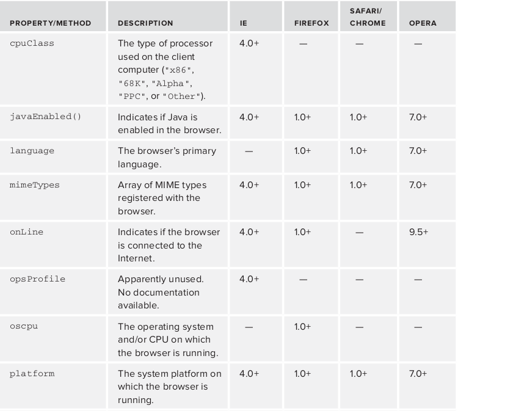

Chapter 11 DOM and BOM
- The Browser Object Model
- The Document Object Model
The Browser Object Model (BOM)
- Understanding the window object, the core of the BOM
- Controlling windows, frames, and pop-ups
- Page information from the location object
- Using the navigator object to learn about the browser
The Browser Object Model (BOM)
The window object
At the core of the BOM is the window object, which represents an instance of the browser. The window object serves a dual purpose in browsers, acting as the JavaScript interface to the browser window and the ECMAScript Global object. This means that every object, variable, and function defi ned in a web page uses window as its Global object.
The Global Scope
Since the window object doubles as the ECMAScript Global object, all variables and functions declared globally become properties and methods of the window object.
var age = 29; let age = 29;
function sayAge(){ function sayAge(){
alert(this.age); //29 alert(this.age); //undefined
} }
alert(window.age); //29 alert(window.age); //undefined
sayAge(); sayAge();
window.sayAge(); //29 window.sayAge(); //undefined
The Global Scope
Despite global variables becoming properties of the window object, there is a slight difference between defining a global variable and defi ning a property directly on window : global variables cannot be removed using the delete operator, while properties defi ned directly on window can.
//throws an error in IE < 9, returns false in all other browsers
delete window.age;
//throws an error in IE < 9, returns true in all other browsers
delete window.color; //returns true
alert(window.age); //29
alert(window.color); //undefined
Navigating and Opening Windows
The window.open() method can be used both to navigate to a particular URL and to open a new browser window. This method accepts four arguments: the URL to load, the window target, a string of features, and a Boolean value indicating that the new page should take the place of the currently loaded page in the browser history.
//same as
window.open(“http://www.wrox.com/”, “topFrame”);
window.open(“http://www.wrox.com/”,”wroxWindow”,
“height=400,width=400,top=10,left=10,resizable=yes”);
Intervals and Timeouts
JavaScript execution in a browser is single-threaded, but does allow for the scheduling of code to run at specifi c points in time through the use of timeouts and intervals. Timeouts execute some code after a specifi ed amount of time, whereas intervals execute code repeatedly, waiting a specific amount of time in between each execution.
You set a timeout using the window ’s setTimeout() method, which accepts two arguments: the code to execute and the number of time (in milliseconds) to wait before attempting to execute the code. The fi rst argument can be either a string containing JavaScript code (as would be used with eval() ) or a function.
Intervals and Timeouts
setTimeout(“alert(‘Hello world!’) “, 1000);//avoid!
//preferred
setTimeout(function() {
alert(“Hello world!”);
}, 1000);
setInterval(function() {
console.log(“Hello world!”);
}, 1000);
clearTimeout
When setTimeout() is called, it returns a numeric ID for the timeout. The timeout ID is a unique identifi er for the scheduled code that can be used to cancel the timeout. To cancel a pending timeout, use the clearTimeout() method and pass in the timeout ID
//set the timeout
const timeoutId = setTimeout(function() {
alert(“Hello world!”);
}, 1000);
clearTimeout(timeoutId); //nevermind - cancel it
setInterval
Intervals work in the same way as timeouts except that they execute the code repeatedly at specific time intervals until the interval is canceled or the page is unloaded. The setInterval() method lets you set up intervals, and it accepts the same arguments as setTimeout() : the code to execute (string or function) and the milliseconds to wait between executions
setInterval(“alert(‘Hello world!’) “, 10000); //avoid!
//preferred
setInterval(function() {
alert(“Hello world!”);
}, 10000);
The setInterval() method also returns an interval ID that can be used to cancel the interval at some point in the future. The clearInterval() method can be used with this ID to cancel all pending intervals.
let num = 0, max = 10, intervalId = null;
function incrementNumber() {
num++;
//if the max has been reached, cancel all pending executions
if (num == max) {
clearInterval(intervalId);
alert(”Done”);
}
}
intervalId = setInterval(incrementNumber, 500);
The Location Object
One of the most useful BOM objects is location , which provides information about the document that is currently loaded in the window, as well as general navigation functionality
window.location and document.location point to the same object. Not only does location know about the currently loaded document, but it also parses the URL into discrete segments that can be accessed via a series of properties.
The Location Object

Manipulating the Location
The browser location can be changed in a number of ways using the location object.
immediately starts the process of navigating to the new URL and makes an entry in the browser’s history stack.
Each time a property on location is changed, with the exception of hash , the page reloads with the new URL.
location.assign(“http://www.wrox.com”);
window.location = “http://www.wrox.com”;
location.href = “http://www.wrox.com”;
Manipulating the Location
Changing various properties on the location object can also modify the currently loaded page. The hash , search , hostname , pathname , and port properties can be set with new values that alter the current URL
//changes URL to “http://www.wrox.com/WileyCDA/#section1”
location.hash = “#section1”;
//changes URL to “http://www.wrox.com/WileyCDA/?q=javascript”
location.search = “?q=javascript”;
//changes URL to “http://www.yahoo.com/WileyCDA/”
location.hostname = “www.yahoo.com”;
//changes URL to “http://www.yahoo.com/mydir/”
location.pathname = “mydir”;
//changes URL to “http://www.yahoo.com:8080/WileyCDA/
The navigator object
The navigator object is the standard for browser identifi cation on the client. Though some browsers offer alternate ways to provide the same or similar information (for example, window.clientInformation in Internet Explorer and window opera in Opera), the navigator object is common among all JavaScript-enabled web browsers.
The navigator object’s properties are typically used to determine the type of browser that is running a web page
The navigator object
The screen object
The screen object (also a property of window ) is one of the few JavaScript objects that have little to no programmatic use; it is used purely as an indication of client capabilities. This object provides information about the client’s display outside the browser window, including information such as pixel width and height. Each browser provides different properties on the screen object.
The screen object
The history object
The history object represents the user’s navigation history since the given window was first used. Because history is a property of window , each browser window, tab, and frame has its own history object relating specifi cally to that window object. For security reasons, it’s not possible to determine the URLs that the user has visited. It is possible, however, to navigate backwards and forwards through the list of places the user has been without knowing the exact URL
The history object
The go() method navigates through the user’s history in either direction, backward or forward.
This method accepts a single argument, which is an integer representing the number of pages to go backward or forward. A negative number moves backward in history (similar to clicking the browser’s Back button), and a positive number moves forward (similar to clicking the browser’s Forward button)
history.go(-1); //go back one page
history.go(1); //go forward one page
history.go(2); //go forward two pages
The history object
Two shortcut methods, back() and forward() , may be used in place of go()
history.back(); //go back one page
history.forward(); //go forward one page
if (history.length == 0) {
//this is the first page in the user’s window
}
The Document Object Model
- Understanding the DOM as a hierarchy of nodes
- Working with the various node types
- Coding the DOM around browser incompatibilities and gotchas
The Document Object Model
The Document Object Model (DOM) is an application programming interface (API) for HTML and XML documents.
The DOM represents a document as a hierarchical tree of nodes, allowing developers to add, remove, and modify individual parts of the page
HIERARCHY OF NODES
Any HTML or XML document can be represented as a hierarchy of nodes using the DOM.
Each node type has different characteristics, data, and methods, and each may have relationships with other nodes
< html >
< head >
< title>Sample Page < /title>
< /head>
< body>
< p>Hello World!< /p>
< /body>
< /html>
HIERARCHY OF NODES
The Node Type
The Node interface is implemented in JavaScript as the Node type, which is accessible in all browsers except Internet Explorer. All node types inherit from Node in JavaScript, so all node types share the same basic properties and methods.
Every node has a nodeType property that indicates the type of node that it is. Node types are represented by one of the following 12 numeric constants on the Node type
Node Types
- Node.ELEMENT_NODE Node.ATTRIBUTE_NODE
- Node.TEXT_NODE
- Node.CDATA_SECTION_NODE
- Node.ENTITY_REFERENCE_NODE
- Node.ENTITY_NODE
- Node.PROCESSING_INSTRUCTION_NODE
- Node.COMMENT_NODE
- Node.DOCUMENT_NODE
- Node.DOCUMENT_TYPE_NODE
- Node.DOCUMENT_FRAGMENT_NODE
- Node.NOTATION_NODE
Node Relationships
All nodes in a document have relationships to other nodes. These relationships are described in terms of traditional family relationships as if the document tree were a family tree
In HTML, the < body> element is considered a child of the < html> element; likewise the < html> element is considered the parent of the < body> element. The < head> element is considered a sibling of the < body> element, because they both share the same immediate parent, the < html> element
Node Relationships
Each node has a childNodes property containing a NodeList . A NodeList is an array-like object used to store an ordered list of nodes that are accessible by position
length property indicates the number of nodes in the NodeList at that time. It’s possible to convert NodeList objects into arrays using Array.from(nodeList)
const firstChild = someNode.childNodes[0];
const secondChild = someNode.childNodes.item(1);
const count = someNode.childNodes.length;
Node Relationships
Another relationship exists between a parent node and its fi rst and last child nodes. The firstChild and lastChild properties point to the fi rst and last node in the childNodes list, respectively. The value of someNode.firstChild is always equal to someNode.childNodes[0] , and the value of someNode.lastChild is always equal to someNode.childNodes[someNode.childNodes.length-1] . If there is only one child node, firstChild and lastChild point to the same node; if there are no children, then firstChild and lastChild are both null .
Node Relationships
childNodes property is really more of a convenience than a necessity, since it’s possible to reach any node in a document tree by simply using the relationship pointers. Another convenience method is hasChildNodes() , which returns true if the node has one or more child nodes and is more effi cient than querying the length of the childNodes list.
Manipulating Nodes
Because all relationship pointers are read-only, several methods are available to manipulate nodes. The most often-used method is appendChild() , which adds a node to the end of the childNodes list
const returnedNode = someNode.appendChild(newNode);
alert(returnedNode == newNode); //true
alert(someNode.lastChild == newNode);//true
var returnedNode = someNode.appendChild(someNode.firstChild);
alert(returnedNode == someNode.firstChild); //false
alert(returnedNode == someNode.lastChild); //true
returnedNode = someNode.insertBefore(newNode, null); //insert as last child
//insert as the new first child
returnedNode = someNode.insertBefore(newNode, someNode.firstChild);
Manipulating Nodes
cloneNode() , which creates an exact clone of the node on which it’s called.The cloneNode() method accepts a single Boolean argument indicating whether to do a deep copy.
//replace first child
const returnedNode = someNode.replaceChild(newNode, someNode.firstChild);
//remove first child
const formerFirstChild = someNode.removeChild(someNode.firstChild);
//remove last child
const formerLastChild = someNode.removeChild(someNode.lastChild);
const deepList = myList.cloneNode(true);
alert(deepList.childNodes.length);
Document Children
DOM specifi cation states that the children of a Document node can be a DocumentType , Element , ProcessingInstruction , or Comment , there are two built-in shortcuts to child nodes. The first is the documentElement property, which always points to the < html> element in an HTML page
const html = document.documentElement; //get reference to < html>
alert(html === document.childNodes[0]); //true
alert(html === document.firstChild); //true
const body = document.body; //get reference to < body>
const doctype = document.doctype; //get reference to < !DOCTYPE>
Document Information
document object properties provide information about the web page that is loaded.
const originalTitle = document.title //get the document title
document.title = “New page title” //set the document title
const url = document.URL; //get the complete URL
const domain = document.domain; //get the domain
const referrer = document.referrer //get the referrer
Locating Elements
The getElementById() method accepts a single argument — the ID of an element to retrieve — and returns the element if found, or null if an element with that ID doesn’t exist.
The getElementsByTagName() method is another commonly used method for retrieving element references. It accepts a single argument — the tag name of the elements to retrieve — and returns a NodeList containing zero or more elements. In HTML documents, this method returns an HTMLCollection object, which is very similar to a NodeList
Locating Elements
< img src=”myimage.gif” name=”myImage”>
< div id=”myDiv”>Some text< /div>
const div = document.getElementById(“myDiv”); //retrieve reference to the < div>
const images = document.getElementsByTagName(“img”);
alert(images.length); //output the number of images
alert(images[0].src); //output the src attribute of the first image
alert(images.item(0).src); //output the src attribute of the first image
const myImage = images.namedItem(“myImage”)
const myImage = images[“myImage”];
const allElements = document.getElementsByTagName(“*”);
const elements = document.getElementsByName(”myImage”);
Special Collections
The document object has several special collections. Each of these collections is an HTMLCollection object and provides faster access to common parts of the document
- document.anchors — Contains all < a> elements with a name attribute in the document.
- document.forms — Contains all < form> elements in the document. The same as document.getElementsByTagName(“form”) .
- document.images — Contains all < img> elements in the document. The same as document.getElementsByTagName(“img”) .
- document.links — Contains all < a> elements with an href attribute in the document.
The Element Type
The Element type represents an XML or HTML element, providing access to information such as its tag name, children, and attributes.
- nodeType is 1
- nodeName is the element’s tag name
- nodeValue is nul
- parentNode may be a Document or Element
- Child nodes may be Element , Text , Comment,ProcessingInstruction , CDATASection , or EntityReference
The Element Type
< div id=”myDiv”>< /div>
const div = document.getElementById(“myDiv”);
alert(div.tagName); //”DIV”
alert(div.tagName == div.nodeName); //true
if (element.tagName.toLowerCase() == “div”){
//do something here
}
Getting Attributes
Each element may have zero or more attributes, which are typically used to give extra information about the particular element or its contents. The three primary DOM methods for working with attributes are getAttribute() , setAttribute() , and removeAttribute() .The getAttribute() method can also retrieve the value of custom attributes that aren’t part of the formal HTML language.
< div id='myDiv' class='bd' my_special_attribute=”hello!>< /div>
const div = document.getElementById(“myDiv”);
alert(div.getAttribute(“id”)); //”myDiv”
alert(div.getAttribute(“class”)); //”bd”
const value = div.getAttribute(“my_special_attribute”);
Setting Attributes
The sibling method to getAttribute() is setAttribute() , which accepts two arguments: the name of the attribute to set and the value to set it to. If the attribute already exists, setAttribute() replaces its value
< div>< /div>
div.setAttribute(“id”, “someOtherId”);
div.setAttribute(“class”, “ft”);
div.setAttribute(“title”, “Some other text”);
Creating Elements
New elements can be created by using the document.createElement() method. This method accepts a single argument, which is the tag name of the element to create.The element can be added to the document tree using appendChild() , insertBefore() , or replaceChild() .
const div = document.createElement(“div”);
div.id = “myNewDiv”;
div.className = “box”;
document.body.appendChild(div);
const attr = document.createAttribute(“align”);
attr.value = “left”;
div.setAttributeNode(attr);
alert(div.getAttribute(“align”)); //”left”
Dynamic Scripts
The < script> element is used to insert JavaScript code into the page, either using by the src attribute to include an external fi le or by including text inside the element itself. Dynamic scripts are those that don’t exist when the page is loaded but are included later by using the DOM.
< script type=”text/javascript” src=”client.js”>< /script>
const script = document.createElement(“script”);
script.type = “text/javascript”;
script.src = “client.js”;
script.text = “function sayHi(){alert(‘hi’);}”;
document.body.appendChild(script);
Dynamic Styles
CSS styles are included in HTML pages using one of two elements. The < link> element is used to include CSS from an external fi le, whereas the < style> element is used to specify inline styles. Similar to dynamic scripts, dynamic styles don’t exist on the page when it is loaded initiall
< link rel=”stylesheet” type=”text/css” href=”styles.css”>
const link = document.createElement(“link”);
link.rel = “stylesheet”;
link.type = “text/css”;
link.href = “styles.css”;
const head = document.getElementsByTagName(“head”)[0];
head.appendChild(link)
Using NodeLists
const divs = document.getElementsByTagName(“div”), div;
for (let i = 0; i < divs.length; i++){
p = document.createElement('p');
p.textContent = 'some text';
document.body.appendChild(p);
}
SELECTORS API
One of the most popular capabilities of JavaScript libraries is the ability to retrieve a number of DOM elements matching a pattern specifi ed using CSS selectors.
The Selectors API ( www.w3.org/TR/selectors-api ) was started by the W3C to specify native support for CSS queries in browsers.
At the core of Selectors API Level 1 are two methods: querySelector() and querySelectorAll() . On a conforming browser, these methods are available on the Document type and on the Element type
The querySelector() Method
The querySelector() method accepts a CSS query and returns the first descendant element that matches the pattern or null if there is no matching element
//get the body element
const body = document.querySelector(“body”);
//get the element with the ID “myDiv”
const myDiv = document.querySelector(“#myDiv”);
//get first element with a class of “selected”
const selected = document.querySelector(“.selected”);
//get first image with class of “button”
const img = document.body.querySelector(“img.button”)
The querySelectorAll() Method
The querySelectorAll() method accepts the same single argument as querySelector() — the CSS query — but returns all matching nodes instead of just one. This method returns a static instance of NodeList.Any call to querySelectorAll() with a valid CSS query will return a NodeList object regardless of the number of matching elements; if there are no matches, the NodeList is empty.
//get all < em> elements in a < div> (similar to getElementsByTagName(“em”))
const ems = document.getElementById(“myDiv”).querySelectorAll(“em”);
//get all elements with class of “selected”
const selecteds = document.querySelectorAll(“.selected”);
//get all < strong> elements inside of < p> elements
const strongs = document.querySelectorAll(“p strong”);
ELEMENT TRAVERSAL
This led to differences in behavior when using properties such as childNodes and firstChild . In an effort to equalize the differences while still remaining true to the DOM specifi cation, a new group of properties was defi ned in the Element Traversal ( www.w3.org/TR/ElementTraversal/ )
- childElementCount — Returns the number of child elements
- firstElementChild — Points to the fi rst child that is an element
- lastElementChild — Points to the last child that is an element.
- previousElementSibling — Points to the previous sibling that is an element
- nextElementSibling — Points to the next sibling that is an element
The getElementsByClassName() Method
The getElementsByClassName() method accepts a single argument, which is a string containing one or more class names, and returns a NodeList containing all elements that have all of the specifi ed classes applied.
//get all elements with a class containing “username” and “current”, though it
//doesn’t matter if one is declared before the other
const allCurrentUsernames = document.getElementsByClassName(“username current”);
//get all elements with a class of “selected” that exist in myDiv’s subtree
const selected = document.getElementById(“myDiv”).getElementsByClassName(“selected”)
The classList Property
In class name manipulation, the className property is used to add, remove, and replace class names.
HTML5 introduces a way to manipulate class names in a much simpler and safer manner through the addition of the classList property for all elements. The classList property is an instance of a new type of collection named DOMTokenList .
- add(value) — Adds the given string value to the list. If the value already exists, it will not be added.
- contains(value) — Indicates if the given value exists in the list
- remove(value) — Removes the given string value from the list.
- toggle(value) — If the value already exists in the list, it is removed
The classList Property
< div class=”bd user disabled”>...< /div>
div.classList.remove(“disabled”);//remove the “disabled” class
div.classList.add(“current”);//add the “current” class
div.classList.toggle(“user”);//toggle the “user” class
if (div.classList.contains(“bd”)) {
//do something
}
for (var i=0, len=div.classList.length; i < len; i++){
doSomething(div.classList[i]);
}
Focus Management
HTML5 adds functionality to aid with focus management in the DOM. The fi rst is document.activeElement , which always contains a pointer to the DOM element that currently has focus
const button = document.getElementById(“myButton”);
button.focus();
alert(document.activeElement === button); //true
Custom Data Attributes
HTML5 allows elements to be specifi ed with nonstandard attributes prefi xed with data- in order to provide information that isn’t necessary to the rendering or semantic value of the element. These attributes can be added as desired and named anything, provided that the name begins with data- .
< div id=”myDiv” data-appId=”12345” data-myname=”Maximus”>< /div>
const div = document.getElementById(“myDiv”);
const appId = div.dataset.appId;
const myName = div.dataset.myname;
div.dataset.appId = 23456;//set the value
div.dataset.myname = ”Michael”;
if (div.dataset.myname) { //is there a ”myname” value?
alert(”Hello, ” + div.dataset.myname);
}
The innerHTML Property
When used in read mode, innerHTML returns the HTML representing all of the child nodes, including elements, comments, and text nodes. When used in write mode, innerHTML completely replaces all of the child nodes in the element with a new DOM subtree based on the specified value.
< div id=”content”>Hello & welcome, < b>"reader"!< /b>< /div>
const div = document.getElementById('content')
div.innerHTML = “Hello world!”;
div.innerHTML = “< script defer>alert(‘hi’);< /script>”;//won’t work
The children Property, contains() Method
The children property is an HTMLCollection that contains only an element’s child nodes that are also elements.
The contains() method is called on the ancestor node from which the search should begin and accepts a single argument, which is the suspected descendant node. If the node exists as a descendant of the root node, the method returns true
const childCount = element.children.length;
const firstChild = element.children[0];
alert(document.documentElement.contains(document.body));//true
Scrolling
As mentioned previously, scrolling is one area where specifi cations didn’t exist prior to HTML5.While scrollIntoView() was standardized in HTML5
- scrollIntoViewIfNeeded ( alignCenter ) — Scrolls the browser window or container element so that the element is visible in the viewport only if it’s not already visible; if the element is already visible in the viewport, this method does nothing
- scrollByLines ( lineCount ) — Scrolls the contents of the element by the height of the given number of text lines, which may be positive or negative
- scrollByPages ( pageCount ) — Scrolls the contents of the element by the height of a page, which is determined by the height of the element
Scrolling
scrollIntoView() and scrollIntoViewIfNeeded() act on the element’s container, whereas scrollByLines() and scrollByPages() affect the element itself
//scroll body by five lines
document.body.scrollByLines(5);
//make sure this element is visible only if it’s not already
document.images[0].scrollIntoViewIfNeeded();
//scroll the body back up one page
document.body.scrollByPages(-1);